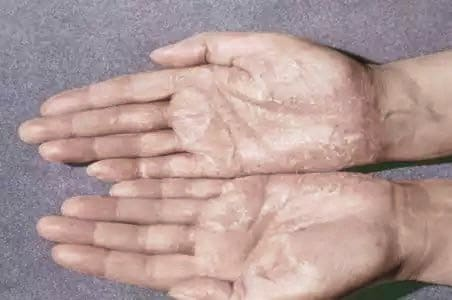
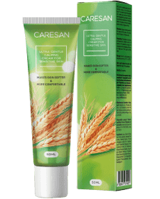
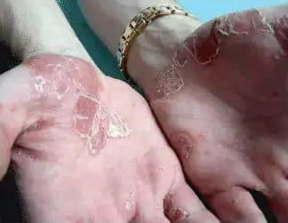

¡Hola! Me llamo Laura Pérez y tengo 36 años. Me he decidido a contaros mi historia. Es la historia sobre cómo tratar la psoriasis. El tema es un poco delicado, sobre todo para las mujeres. No es fácil hablar de ello... La psoriasis es una enfermedad médica complicada que también tiene un impacto estético. La vida puede convertirse en una tortura cuando tienes manchas feas y antiestéticas en la piel. Además del picor, la hinchazón y la descamación, te toca enfrentarte a la gente, que habla a tus espaldas. Muchas personas también creen que la psoriasis es contagiosa. Por lo tanto, los que la padecen quedan prácticamente aislados de la sociedad y, como consecuencia, no pueden llevar una vida normal... Estoy en una edad en la que es bastante difícil que te duela la opinión de los demás, pero esto resultó ser demasiado difícil hasta para mí...
Esta historia empezó hace unos cinco años. Un día, me estaba duchando cuando noté algunas costras en la piel, en la zona del codo. Estas fueron las primeras zonas que se vieron afectadas por la inflamación. Tenían aspecto de placas de color rosa, eran duras y con estrías. Me puse una crema cosmética sobre la zona. Pensé que se trataba de piel seca, de que no me había cuidado correctamente. Bueno, yo siempre me cuido y elijo cuidadosamente los productos de cosmética y cuidado personal que utilizo. Nunca he tenido una alergia.
Cuando tres semanas después comenzaron a crecer unas manchas muy raras, ya me preocupé un poco y fui inmediatamente a un dermatólogo. Después de una cuidadosa revisión y de analizar los resultados, el diagnóstico fue que tenía psoriasis. ¡Me enfadé mucho! Mi médico me recetó la terapia habitual: medicamentos hormonales (pomadas y lociones) y un programa homeopático (baño con sal marina e hierbas). El tratamiento dio solo resultados temporales. Las manchas perdieron color y algunos síntomas desaparecieron (el picor y las reacciones inflamatorias). Sin embargo, cuando dejé los cuidados intensivos y empecé solo con el mantenimiento, todos los problemas volvieron a aparecer. Además, parece ser que después del tratamiento hormonal, las manchas comenzaron a crecer más rápidamente. Todo esto ocurrió durante unos 2 años y medio. Con el tiempo, la psoriasis se extendió por toda la superficie de las dos manos. ¡Me quedé muerta cuando vi signos de la enfermedad también en las piernas y las nalgas! Entonces casi me vuelvo loca. La situación empeoró aún más con el pánico que me entró: cuando vi los comentarios de otras personas que también padecían psoriasis me estresé todavía más. Algunos no se habían podido curar tras 15-20 años, otros llevaban viviendo con este problema toda su vida...
Estaba comprando como una loca diversos productos contra la psoriasis en la farmacia. Cremas, gotas, aerosoles, de todo... Probé métodos alternativos de tratamiento, como ir a spas con algo así como un barro especial. Una vez, incluso intenté hacer un exorcismo a la enfermedad con un viejo hechizo. Por supuesto, no tuvo absolutamente ningún resultado. Este problema estaba afectando a mi vida y a mi trabajo a un ritmo cada vez mayor. Sentía vergüenza de mí misma y de mi aspecto, lo cual me convertía en una persona irritable, agresiva e hipersensible. Y no veía luz al final del túnel...
Oí hablar de a una amiga. Ella está a favor de los tratamientos naturales que no implican "sustancias pesadas" como las hormonas. Después de todo lo que yo había experimentado con los medicamentos, no tardó mucho tiempo en convencerme. Compré inmediatamente en la página web del fabricante y empecé mi tratamiento. No tenía nada que perder, excepto mi tiempo y energía... Para ser sincera, después de tantos intentos fallidos para encontrar una cura, ya no esperaba encontrar un efecto positivo. Las palabras de mi médico, que los productos naturales son inútiles para solucionar problemas que las hormonas no pudieron combatir, resonaban profundamente en mi mente.
Tras 10 días de tratamiento con , de repente me di cuenta de que ya casi no sentía picor ni ardor. En ocasiones incluso se me olvidaba que tenía psoriasis... El aspecto de mi piel también cambió. Estas manchas empezaron a apagarse y las reacciones inflamatorias desaparecieron. ¡La exfoliación desapareció y mi piel se volvió un poco más suave otra vez! ¡No me lo podía creer! ¡Me apliqué en las nuevas manchas y dejaron de crecer, hasta que se difuminaron un poco! Yo sabía que no era una cura total contra la psoriasis, sino que solo aliviaba los síntomas. El éxito de mi tratamiento con me pareció impresionante y tenía ganas de terminarlo. Tras un mes, ¡se habían aliviado los síntomas de la psoriasis! Aunque mi piel no era igual que antes de que apareciera la enfermedad, sí veía que iba mejorando su aspecto poco a poco. Seguía teniendo manchas en la piel, costras y otros signos de la psoriasis, pero mucho menos que antes. ¡Era un alivio!
Tras unos tres meses, los síntomas habían disminuido un poco. Apenas tenía manchas nuevas, mientras que las antiguas se habían convertido en pequeñas motas oscuras que solo yo podía detectar. Sin embargo, a medida que pasa el tiempo, se vuelven aún más pequeñas aunque sigo teniendo psoriasis, pero mucho más leve. Ahora, uso de forma proactiva, una vez cada dos meses. Incluso puede que no sea necesario. De todas formas, no tiene contraindicaciones ni efectos secundarios, por lo que se puede utilizar incluso después de la finalización del tratamiento. Quiero recordaros una vez más que no cura completamente la psoriasis pero sí alivia los síntomas en gran medida. ¡No puedo describir con palabras lo feliz que soy! Sinceramente, quiero que mi experiencia ayude a todos los que necesitan un tratamiento especial, ¡para empezar una vida nueva y saludable sin tantos síntomas de la psoriasis!
Ahora voy a compartir con vosotros información sobre la composición del producto. contiene 5 ingredientes básicos.
- Aceite de Almendra Dulce
Contiene grandes cantidades de ácidos grasos: ácido linoleico (omega-3) hasta el 30%, ácido oleico (omega-9) hasta el 28%, ácido linoleico (omega-6) 60% valioso en el tratamiento de las enfermedades de la piel y vitaminas A, E, K, B1, B2, B6. Estas sustancias biológicamente activas desempeñan un papel importante en el tratamiento de la psoriasis, en caso de lesiones epidérmicas extensas, problemas de metabolismo celular. - Allantoin
Tiene un efecto terapéutico sobre las placas psoriásicas: mejora la regeneración de la piel, alivia el picor, reduce la inflamación, elimina la descamación y suaviza las escamas. - Pantenol
Estimula la regeneración de la piel, hidrata, suaviza la piel dañada. Estimula la cicatrización de la piel sin que se produzcan cicatrices ni pigmentación. Tiene un efecto antiinflamatorio. - Avena Sativa Kernel Extract
Este ingrediente natural es un aceite vegetal que posee una importante cantidad de vitamina E y vitamina K. Sus propiedades nutritivas hacen que sea un producto adecuado para los tratamientos naturales destinados a combatir el acné, las arrugas y otras enfermedades de la piel, como es el caso de la psoriasis. - Pantenol
Tiene un efecto antimicrobiano y antiséptico: provoca la destrucción de las bacterias patógenas en la piel sana o inflamada; alivia la inflamación y la hinchazón; acelera la exfoliación de las células y tejidos queratinizados. - Cera de abejas
Tiene efectos antiinflamatorios y antialérgicos y es un purificador de la sangre debido a la presencia de un gran número de sustancias biológicamente activas.
Crea una barrera protectora para la piel recién renovada. Esto refuerza su inmunidad local y tiene un efecto antiséptico que impide la entrada de bacterias e infecciones en la piel.
Todos estos componentes evitan la propagación de la psoriasis y alivian en gran medida los síntomas. Regulan los procesos metabólicos en las capas más profundas de la piel y mejoran la microcirculación. Aunque no cura la psoriasis del todo, especialmente en los casos más graves, sí que ayuda a eliminar la irritación y aporta nutrición y alivio a la piel.
Es importante comprender que la fórmula auténtica de contiene solamente el verdadero medicamento. ¡ solamente se puede pedir en la página web del fabricante! De lo contrario, corres el riesgo de comprar un producto falso, que podría agravar el tratamiento de la enfermedad.
El contenido especial de permite que se utilice en cualquier etapa y forma de la enfermedad, aunque hay que señalar que no cura completamente los casos más graves. más bien ayuda a eliminar la irritación, nutre y alivia la piel y evita que se propague la enfermedad. También se puede combinar su uso con los métodos tradicionales de tratamiento. Por cierto, mi médico también se sorprendió de los resultados de . Ahora lo utiliza como tratamiento principal o complementario de la psoriasis.
Afortunadamente, mi experiencia puede ayudaros a volver a estar sanos. ¡Estaría encantada de responder a todas vuestras preguntas!
Comentarios
Elena, 30 años
¡Gracias por la información! ¡Lo probaré!
Vicky, 25 años
En mi caso, la psoriasis apareció hace 9 años... ¡¡He probado tantas cosas!! ¿Por qué mi médico no me recomendó este producto antes? ¿Es que es nuevo? 
Laura, 36 años
Este producto, es efectivamente un remedio nuevo. Quizás tu médico no tenga experiencia con él.
Eva, 33 años
Sí, ¡es importantísimo utilizar solamente el auténtico ! Por desgracia, una vez compré un producto falso ¡y me puse peor! Este producto no está disponible en la farmacia...
Laura, 36 años
Este remedio auténtico es absolutamente necesario para una curación efectiva. no suele encontrarse en farmacias. No se fabrica en grandes cantidades. Por eso, la mejor opción es pedirlo en la página web. ¡Comprarlo así es más rápido y más fiable!
Miguel, 39 años
Laura, yo miro este tipo de medicamentos con escepticismo. ¡Realmente no creo que se pueda curar la psoriasis mezclando aceites e ingredientes antisépticos "químicos"! ¡O tenías un tipo de psoriasis muy leve o ni siquiera tenías esta enfermedad!
Laura, 36 años
Miguel, el diagnóstico lo hizo un médico muy conocido y de confianza. Puedo estar de acuerdo en que no se descuidó mi situación. Fui al médico inmediatamente en cuanto vi los primeros síntomas. Por otro lado, conozco casos en los que ha ayudado a muchas personas que llevaban padeciendo psoriasis unos 10 años e incluso más. De todas formas, recuerda que el medicamento no cura del todo la enfermedad, sino que pretende aliviar los síntomas.
María, 28 años
Yo también estoy en una fase inicial de la enfermedad. ¡Seguro que lo probaré! No quiero quedarme de brazos cruzados.
Andrés, 51 años
¡Estoy de acuerdo con Laura! puede ayudar a todo el mundo, sin importar en qué fase de la enfermedad se encuentre cada uno. Yo ya aprendí la lección, estuve sometiéndome a tratamientos inútiles durante 7 años. Cuando utilicé , ¡noté una mejoría después de tan solo 1 mes! ¡Te recomiendo que empieces a utilizarlo!
Vanesa, 47 años
Tengo que decir que alivíó los síntomas de la psoriasis de mi marido en 2-3 meses. Su enfermedad no era para nada leve. No podía tomar hormonas y además es alérgico a las pomadas. ¡ fue perfecto para él!
Ana, 35 años
¡Gracias por compartir tu experiencia con nosotros! He sufrido depresión como tú... Mi enfermedad va avanzando y en realidad, los tratamientos convencionales no ayudan.
Laura, 36 años
Ana, ¡no tires la toalla! ¡Todo va a salir bien! ¡Estoy segura de que este remedio te ayudará!
Alex, 19 años
¿Puedes utilizar si eres alérgico a alguno de sus componentes?
Laura, 36 años
No lo sé exactamente, pero puedo decir por mí misma que no tuve ninguna alergia mientras usaba .
Carolina, 44 años
¿Cómo curan la enfermedad estos aceites e ingredientes? Estas marcas en la piel son solo el resultado...
Laura, 36 años
Los aceites y demás ingredientes no curan completamente la enfermedad. Solamente ayudan al cuerpo a combatir el problema y a evitar que se propague la psoriasis. Afinan los procesos metabólicos de la piel, aportan vitaminas y minerales, mejoran la microcirculación, etc. En general, mejoran el estado de salud.
Jaime, 29 años
Tiene buena pinta, ¡lo probaré! El picor es muy molesto, ¡igual que vivir en esta enfermedad!
Susana, 40 años
Puedo reconocer que me ayudó también, pero no tan rápidamente como en tu caso. Por supuesto, he estado sufriendo psoriasis durante mucho más tiempo, aproximadamente 10 años.
Juan, 37 años
Mi tratamiento con duró 6 meses. ¡La verdad es que no me arrepiento! Este es el único producto que poco a poco me ha hecho la vida más fácil. Ninguno de los otros productos tuvo resultados parecidos, ni siquiera tras un año entero.
Alicia, 18 años
Tu historia me ha ayudado mucho. ¡Empezaré el tratamiento y al final me volveré a sentir sano!
Samanta, 28 años
¿Por qué sigues usando cuando ya te has curado? ¿Es necesario? ¿Puede crear adicción?
Laura, 36 años
¡Por supuesto que no es necesario! Pero no puede crear adicción. En mi caso, las zonas afectadas eran muy grandes, lo cual dejó manchas en mi piel. Yo diría que soy excesivamente prudente, aunque mis médicos dicen que no debo preocuparme por nada.
Carla, 48 años
¡¡Muchas gracias por tu historia!! ¡De repente he empezado a creer que puedo librarme de la psoriasis! ¡Sin duda, puedo escribir mi experiencia tras usar !
Jorge, 59 años
Probé el año pasado. Me ayudó mucho. Se lo recomiendo encarecidamente a todo el mundo.
Javier, 32 años
MI madre usó este remedio durante un mes. ¡Ahora está muy contenta! No tiene manchas nuevas y las antiguas se han ido volviendo más pálidas poco a poco. La verdad es que espero que se olvide de la psoriasis de una vez por todas.